화공기사(구)(구) (2004-09-05 기출문제)
1과목: 화공열역학
1. 어떤 기체가 외압 1기압이며 부피 10L에서 24L로 가역 팽창하였다. 이 때 행한 일은 얼마인가?
- 14L-atm.
- 10L-atm
- 24L-atm
- 240L-atm
(정답률: 알수없음)

2. 용적 400L의 탱크에 200℃의 질소 140kg을 저장하려한다. 이상적 행동을 한다면 이 때 압력은?
- 615.12 atm
- 500.57 atm
- 484.83 atm
- 313.91 atm
(정답률: 알수없음)
3. 정용과정의 온도에 대한 엔트로피의 변화는 Maxwell 관계식에서 어떻게 나타나는가?
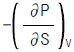
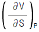
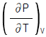
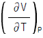
(정답률: 알수없음)
4. 물의 증발잠열Δ
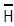
는1기압,100℃에서 539㎈/g이다. 만일 이 값이 온도와 기압에 따라 큰변화가 없다면 압력이 635㎜Hg인 고산지대에서 물의 끓는 온도는?- 26.2℃
- 30℃
- 95℃
- 98℃
(정답률: 알수없음)
5. 동일한 ω (acentric factor)의 값을 갖는 유체와 관계가 있는 것은?
- 같은 Pr, Tr 에서 Z 값은 같다.
- 같은 Tr, Vr 에서 Z 값은 같다.
- 같은 Pr, Tr 에서 Zc 값은 같다.
- 같은 Tr, Vr 에서 Zc 값은 같다.
(정답률: 알수없음)
6. fugacity에 관한 설명 중 틀린 것은?
- 일종의 시강(intensitive properties)변수이다.
- 이상기체 압력에 대응하는 실제기체의 상태량 이다.
- 이상기체 압력에 퓨거시티계수를 곱하면 퓨거시티가 된다.
- 퓨거시티는 압력만의 함수이다.
(정답률: 알수없음)
7. 압력 P1, 절대온도 T1, 부피 V1 인 공기를 절대온도 T2까지 온도를 상승시켰을 때 내부에너지의 변화는?
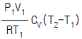
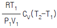
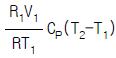
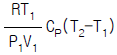
(정답률: 알수없음)
8. 질소를 이상기체라고 생각하였을 때 실온에서의 Cp는? (단, R은 기체상수)
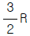
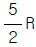
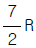
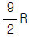
(정답률: 알수없음)
9. Gibbs -Duhem 식에서 얻어진 공존 방정식인 다음 식이 성립 될 수 없는 경우는?
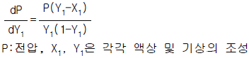
- 저압인 경우
- 온도가 일정한 경우
- 진한 용액인 경우
- 2상이 공존할 경우
(정답률: 알수없음)
10. 엔트로피(entropy)에 관한 설명 중 틀린 것은?
- 엔트로피는 상태함수이다.
- 비가역 변화에서 그 계의 엔트로피는 증가한다.
- 가역변화에서 고립계(isolated system)의 엔트로피는 감소한다.
- 순환과정(cyclic process)에서 계의 엔트로피 변화는 0 이다.
(정답률: 알수없음)
11. 다음 중 융해, 기화, 승화시 변하지 않는 열역학적 성질에 해당하는 것은?
- 엔트로피
- 내부에너지
- 화학 포텐셜
- 엔탈피
(정답률: 알수없음)
12. 단열된 상자가 2개의 같은 부피로 양분되었고, 한 쪽에는 Avogadro수의 이상 기체 분자가 들어 있고 다른 쪽에는 아무 분자도 들어 있지 않다고 한다. 칸막이가 터져서 기체가 양쪽에 차게 되었다면 이때 엔트로피 변화 값 Δ S는 다음중 어느 것인가?
- Δ S = RT ln 2
- Δ S = -R ln 2
- Δ S = R ln 2
- Δ S = -RT ln 2
(정답률: 알수없음)
13. 응축성 유체를 작업유체로 사용하는 열기관에서 유체의 증발열이 클 경우에는 어떤 결과가 기대되는가?
- 단위동력당 유체의 순환량이 증가한다.
- 단위동력당 유체의 순환량이 감소한다.
- 열기관의 효율이 증가한다.
- 열기관의 효율이 떨어진다.
(정답률: 알수없음)
14. 내연기관 중 자동차에 사용되고 있는 것으로 흡입행정은 거의 정압에서 일어나며, 단열압축 과정 후 전기 점화에 의해 단열 팽창하는 사이클은 어떤 사이클인가?
- 오토(Otto) 사이클
- 디젤(Diesel) 사이클
- 카르노(Carnot) 사이클
- 랭킨(Rankin) 사이클
(정답률: 알수없음)
15. 어떤 연료의 발열량이 10000㎉/㎏일때 이 연료 1㎏이 연소해서 30%가 유용한 일로 바뀔수 있다면 500㎏의 무게를 올릴 수 있는 높이는 약 얼마인가?
- 25m
- 250m
- 2.5㎞
- 25㎞
(정답률: 알수없음)
16. 3개의 기체 화학종(Chemical species) N2, H2, NH3로 구성된 화학반응이 일어나는 반응계의 자유도는?
- 0
- 1
- 2
- 3
(정답률: 알수없음)
17. 다음 식 중에서 증기압을 구할 수 없는 방정식은?
- Clausius-Clapeyron equation
- Antoine equation
- Riedel equation
- Dieterici equation
(정답률: 알수없음)
18. 다음은 이상용액에 관련된 식들이다. 이중에 틀린 것은?
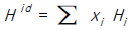
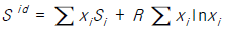
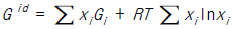
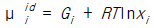
(정답률: 알수없음)
19. 2.0[atm]의 압력과 25[oC]의 온도에 있는 2.0 몰의 수소가 동일조건에 있는 3.0 몰의 암모니아와 이상적으로 혼합될 때 깁스 자유에너지 변화량(ΔGM)은?
- - 8.34 [kJ]
- - 5.58 [kJ]
- 5.58 [kJ]
- 8.34 [kJ]
(정답률: 알수없음)
20. 용량이 100,000 kW 인 발전소에서 600 K에서 스팀을 생산하여 발전기를 작동시킨 후 300 K에서 버린다. 만일 이 발전소의 열 효율이 가능한 최대효율의 60 % 라고 할 때, 얼마만한 열을 버려야 하는가?
- 200,000 kW
- 166,667 kW
- 333,333 kW
- 233,333 kW
(정답률: 알수없음)
2과목: 화학공업양론
21. 탄소 3g가 산소 16g 중에서 완전연소 되었다면 연소 후 혼합기체의 부피는 0℃, 1atm에서 몇 L인가?
- 22.4
- 16.8
- 11.2
- 5.6
(정답률: 알수없음)
22. NH3 10㎏을 20℃에서 0.1m3로 압축하려면 어느 정도의 압력을 가하여야 하는가? (단, NH3의 분자량은 17이며, 1atm = 1.03㎏/㎝2이다.)
- 145.9㎏ㆍ㎝-2
- 182.5㎏ㆍ㎝-2
- 190.2㎏ㆍ㎝-2
- 198.4㎏ㆍ㎝-2
(정답률: 알수없음)
23. 기체 A의 30vol%와 기체 B의 70vol%의 기체 혼합물에서 기체 B의 일부가 흡수탑에서 산에 흡수되어 제거된다. 이 흡수탑을 나가는 기체 혼합물 조성에서 기체 A가 80vol%이고 흡수탑을 들어가는 혼합기체가 100mole/hr라 하면 얼마의 기체 B가 흡수되겠는가(mole/hr)?
- 52.5
- 62.5
- 72.5
- 82.5
(정답률: 알수없음)
24. 30℃, 1atm하에서 40wt% 의 에탄올과 60wt%의 물이 혼합되고 있다면 에탄올의 농도는 몇 g/L라고 볼 수 있는가? (단, 혼합액의 밀도는 0,938g/cm 이다.)
- 356 g/L
- 375 g/L
- 938 g/L
- 891 g/L
(정답률: 알수없음)
25. 같은 조건에서 비교 습도와 상대습도와의 관계를 나타낸 것 중 옳은 것은?
- 비교습도는 상대습도 보다 항상크다.
- 상대습도는 비교습도 보다 항상크다.
- 상대습도와 비교습도는 일정한 관계가 없다.
- 상대습도와 비교습도는 포화상태를 제외하면 동일하다.
(정답률: 알수없음)
26. Van der waals 상태 방정식에 관한 설명 중 틀린 것은?
- 고압으로 갈수록 실제기체에 잘 맞는다.
- 이상기체에서 분자 인력에 대해 보정한 것이다.
- 이상기체에서 분자 부피에 대해 보정한 것이다.
- 보정상수 a의 st 단위는 Paㆍm6㏖-2이다.
(정답률: 알수없음)
27. 다음 반응의 표준 반응열은? (단, 표준연소열 △H°298은 C2H5OH(ℓ) = -326.7kcal/g-mole, CH3COOH(ℓ) = -208.4kcal/g-mole, CH3COOC2H5(ℓ) = -538.8kcal/g-mole, H2O(ℓ) = 0kcal/g-mole)
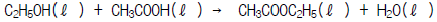
- +3.7㎉/g-mole
- -3.7㎉/g-mole
- -6.7㎉/g-mole
- +6.7㎉/g-mole
(정답률: 알수없음)
28. 어떤 연료유의 분석치는 탄소 87%, 수소 13% 였다. 이 연료유의 발열량을 산소 봄열량계 속에서 측정한 결과 열량계의 온도가 25℃였을 때, 19450 및 19410 Btu/lb였다. 정용조건하의 실험에서 구한 발열량 Qv와 정압발열량 Qp 와의 차는 몇 Btu/lb이겠는가?
- Qp - Qv = 103.92 Btu/lb
- Qp - Qv = 51.96 Btu/lb
- Qp - Qv = 40.⑤ Btu/lb
- Qp - Qv = 34.64 Btu/lb
(정답률: 알수없음)
29. 고체가 액체로 융해 시 나타나는 에너지 변화의 설명 중 맞는 것은?
- 내부에너지 변화는 엔탈피 변화와 거의 같다.
- 압력 변화를 고려하여 에너지 변화를 계산한다.
- 체적 변화를 고려하여 에너지 변화를 계산한다.
- 압력과 체적의 적(積) 변화를 고려하여 에너지 변화를 계산한다.
(정답률: 알수없음)
30. 수분이 60%인 어묵을 500kg/h의 속도로 건조하여 수분을 20%로 만들 때 수분의 증발속도[kg/h]는 얼마인가?
- 200
- 220
- 240
- 250
(정답률: 알수없음)
31. 평형상수의 설명 중 틀린 것은?
- 반응속도상수에 무관하다.
- 반응속도에 관계한다.
- 반응물 양에 무관하다.
- 반응속도상수에 관계한다.
(정답률: 알수없음)
32. pulp를 건조기 속에 넣어 수분을 증발시키는 공정이 있다. 이 때 pulp가 70wt%의 수분을 포함하고, 건조기에서 100kg의 수분을 증발시켜 30wt% pulp가 되었다면 원래의 pulp의 무게(kg)는 얼마인가?
- 125
- 150
- 175
- 200
(정답률: 알수없음)
33. 단열 과정에서의 P, V, T 관계를 옳게 나타낸 것은? (단, r = Cp/Cv)
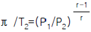
- P1/P2=(V1/V2)r-1
- π /T2=(V2/V1)r
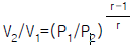
(정답률: 알수없음)
34. 1mole% 에탄(C2H6)을 함유하는 가스가 20atm,20℃의 물에 접촉시 용해되는 에탄의 몰분율은? (단,에탄의 헨리상수(H)는 2.63 x 104atm/mole fraction이다.)
- 7.6 x 106mole C2H6/mole
- 8.3 x 106mole C2H6/mole
- 8.6 x 106mole C2H6/mole
- 9.1 x 106mole C2H6/mole
(정답률: 알수없음)
35. 톨루엔속에 녹은 40％의 이염화에틸렌 용액이 매 시간 100mole씩 증류탑 중간으로 공급된다. 탑속의 축적량은 없다. 두 물질 100mole/hr는 두 곳으로 나간다. 하나는 위로 올라가는데 이것을 증류물이라 하고, 밑으로 나가는 것을 밑흐름이라 한다. 증류물은 이염화에틸렌 95％을 가졌고 밑흐름은 이염화에틸렌 10％을 가졌다. 각 흐름의 속도는 얼마인가?
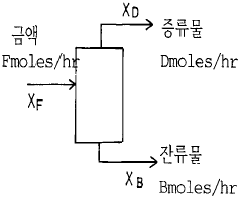
- D=35.3mole/hr, B=64.7mole/hr
- D=64.7mole/hr, B=35.3mole/hr
- D=0.35mole/hr, B=0.64mole/hr
- D=0.64mole/hr, B=0.35mole/hr
(정답률: 알수없음)
36. 기체, 액체 및 고체의 열용량의 설명 중 틀린 것은?
- 기체 열용량은 압력변화에 의존한다.
- 액체 열용량은 기체보다 압력변화에 덜 의존한다.
- 고체의 정압열용량은 정용열용량보다 크다.
- 고체 열용량은 압력변화에 무관하다.
(정답률: 알수없음)
37. 0℃의 공기 2mole을 -100℃까지 냉각하는데 얼마의 열량을 제거하여야 하는가? (단, 이 온도 범위의 평균 몰 비열은 5.5 kcal/molㆍ ℃이다.)
- -550 kcal
- -800 kcal
- -1100 kcal
- -1350 kcal
(정답률: 알수없음)
38. 다음 조작에서 조성이 서로 다른 흐름은? (단, 정상상태이다.)
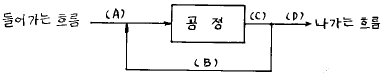
- (A)
- (B)
- (C)
- (D)
(정답률: 알수없음)
39. 실온에서 조성이 부피%로 탄산가스 30%, 일산화탄소 5%, 산소 10%, 질소 55%인 혼합가스의 평균 분자량은?
- 33.2
- 43.2
- 45.2
- 47.2
(정답률: 알수없음)
40. 20℃에서 물 100g에 녹는 결정 황산나트륨(Na2SO4ㆍ10H2O)는 56.4g이다. 이 온도에서 황산나트륨의 용해도
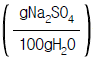
를 구하면 얼마인가? (단, Na의 원자량 23, S의 원자량 32이다.)- 0.189
- 18.9
- 0.249
- 24.9
(정답률: 알수없음)
3과목: 단위조작
41. 비등액체로의 열전달에 있어서 수평가열관이 끓는 액체가 들어 있는 용기 내에 잠겨 있는 경우 수평가열관의 온도와 끓는 액체의 온도 사이의 온도차에 따라 발생되는 현상이 아닌 것은?
- 핵비등
- 자연대류
- 전이비등
- 적비등
(정답률: 알수없음)
42. 적상응축(Dropwise condensation)과 막상응축(Film condensation)중 평균열전달계수의 크기는?
- 적상응축이 막상응축 보다 크다.
- 막상응축이 적상응축 보다 크다.
- 둘 다 같다.
- 경우에 따라 다르다.
(정답률: 알수없음)
43. 충전탑에 있어서 한계 기액비(minimum solvent ratio)는
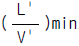
으로 표시한다. 이 비(比)가 클 때 탑에 미치는 영향은?- 탑의 길이는 길어지고 농축비용은 감소한다.
- 탑의 길이는 짧아지고 농축비용도 감소한다.
- 탑의 길이는 길어지고 기체의 회수비용은 작아진다.
- 탑은 짧아지나 기체의 회수비용은 흡수액의 희석때문에 커진다.
(정답률: 알수없음)
44. 내경 5㎝의 관속을 비중 0.8, 점도 20cP의 기름이 흐른다 유속이 1㎧ 이고, 관의 한 점의 정압이 1㎏/㎝2ㆍ G 일 때 여기서부터 100m 하류로 10m 저위에 있는 관의 한 점의 정압은?
- 1.5㎏/㎝2ㆍG
- 3.0㎏/㎝2ㆍG
- 3.5㎏/㎝2ㆍG
- 5.0㎏/㎝2ㆍG
(정답률: 알수없음)
45. 증발조작에 있어서 진공증발의 목적과 관계 없는 것은?
- 부대설비가 필요 없다.
- 열에 예민한 물질을 농축하는데 적절한 조작이다.
- 증기의 열 경제성을 향상시킨다.
- 비점을 저하시킨다.
(정답률: 알수없음)
46. 연속정류(Rectification)에서 환류비가 미치는 영향에 대한 설명으로 옳지 않은 것은? (단, 최적환류비 보다 증가할 때이다.)
- 정류탑의 탑경이 커진다.
- 이론단수가 작아진다.
- 리보일러(Reboiler)의 용량이 작아진다.
- 응축기의 용량이 커진다.
(정답률: 알수없음)
47. 서로 밀착되어 있는 두개의 평판 A, B가 있다. A의 열전도도가 1㎉/hrㆍ mㆍ℃, 두께 2m 이고, B의 열전도도가 2㎉/hrㆍ mㆍ ℃, 두께가 1m 이다. t1 = 500℃, t2 = 300℃ 이면 t3 는 몇 ℃ 인가?
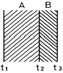
- 250℃
- 230℃
- 200℃
- 180℃
(정답률: 알수없음)
48. 분쇄에너지는 생성입자의 입경의 평방근에 반비례한다는 법칙은?
- Sherwood 법칙
- Rittinger 법칙
- Kick 법칙
- Bond 법칙
(정답률: 알수없음)
49. 의소성유체(Pseudoplastic fluid)에 대한 문턱전단응력(τo)과 상수(n)의 값이 바르게 표시된 것은?
- τo= 0, n > 1
- τo= 0, n < 1
- τo≠ 0, n = 1
- τo≠ 0, n ≠ 1
(정답률: 알수없음)
50. 이중열교환기에 있어서 내부관의 두께가 매우 얇고, 관벽 내부경막열전달계수 hi 가 외부경막열전달계수 ho 와 비교하여 대단히 클 경우 총괄열전달계수 U 에 대한 가장 적절한 표현은?
- U = hi + ho
- U = hi
- U = ho
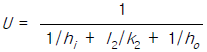
(정답률: 알수없음)
51. 벤젠이 60mol% 인 벤젠-톨루엔 혼합액 100kg-mol을 단증류하여 남은 액을 벤젠 5mol% 로 하는데 필요한 유출량은 몇 kg-mol인가? (단, 비휘발도는 3.5로 한다.)
- 62.4
- 71.6
- 89.0
- 92.5
(정답률: 알수없음)
52. 추출(Extraction)에 대한 설명으로 옳지 않은 것은?
- 무한대로 추출할 경우 추잔율은 0 이 된다.
- 무한대로 추출할 경우 추출율은 1 이 된다.
- 추료중에 포함된 가용성 성분을 추료(feed)라 한다.
- 고-액 추출은 침출(leaching)이라고도 한다.
(정답률: 알수없음)
53. 추출은 용질의 어떤 물리적 성질 차이를 이용하여 분리하는 방법인가?
- 비점
- 전하량
- 용해도
- 분자량
(정답률: 알수없음)
54. 정류탑의 이론단수가 최대가 되기 위한 환류비(Reflux Ratio)는?
- 최소 환류비
- 평균 환류비
- 전 환류비
- 최적 환류비
(정답률: 알수없음)
55. 하겐-프아즈(Hagen-Poiseuille)식이 성립하기 위한 유체의 흐름과 관련된 조건이 아닌 것은?
- 수평관을 흐르는 유체
- 난류
- 뉴우튼 유체
- 완전발달흐름
(정답률: 알수없음)
56. 유량측정 장치에 대한 설명으로 옳지 않은 것은?
- Rotameter 는 유량을 직접 측정 한다.
- Venturimeter 는 orifice 보다 압력손실이 크다.
- Pitot tube 는 국부유속을 측정하여 유량을 측정할 수 있다.
- 전자유량계는 패러데이의 전자유도법칙을 이용한 것이다.
(정답률: 알수없음)
57. 다음 그림은 다공성 고체의 건조에 대한 자유수분 (X)과 건조속도(R)의 관계를 나타낸 것이다. 이 그래프에 대한 설명으로 옳지 않은 것은?
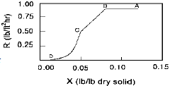
- AB 구간에서 고체 내부로부터 표면으로의 물공급이 충분하여, 표면이 물로 충분히 젖어 있다.
- AB 구간에서 고체 표면온도는 공기의 건구온도에 접근한다.
- BC 구간에서 고체 기공속의 물은 연속상이다.
- CD 구간에서 고체에는 온도구배가 생긴다.
(정답률: 알수없음)
58. 가열한 용액을 고진공실로 보내어 자기증발을 행하는 열 전달면이 없는 증발방식으로 최근 바닷물의 담수화에 이용되는 방법은?
- 진공증발법
- 플래쉬증발법
- 냉매압축법
- 자기증기압축법
(정답률: 알수없음)
59. 실린더 형태의 봉에 있어서 반경 방향의 열전달만 고려할 경우 온도 T와 봉 중심으로 부터 외부 표면까지의 거리r과의 관계로서 옳게 설명한 것은?
- Ｔ와 ｒ은 직선 관계이다.
- Ｔ와 ln r 은 직선 관계이다.
- Ｔ와
 은 직선 관계이다.
은 직선 관계이다. - Ｔ와 ｒ은 전혀 관계가 없다.
(정답률: 알수없음)
60. 도관의 내경이 49㎜이고 외경이 149㎜이며 길이가 10m일 때, 이 도관의 대수 평균표면적은?
- 2.35m2
- 2.54m2
- 2.82m2
- 2.92m2
(정답률: 알수없음)
4과목: 반응공학
61. A + B → R 인 2차 반응에서 CA0와 CB0의 값이 서로 다를 때 반응속도상수 k를 얻기 위한 방법은? (단, 반응물을 양론비로 공급하지 않은 경우)
- ln(CBCA0/CACB0)와 t를 도시(plot)하여 원점을 지나는 직선을 얻는다.
- ln(CB/CA)와 t를 도시하여 원점을 지나는 직선을 얻는 다.
- ln[(1 - XA)/(1 - XB)]와 t를 도시하면 절편이 ln(CB0/CA0)이다.
- 위의 세 경우 모두 기울기는 (CA0 - CB0)k이다.
(정답률: 알수없음)
62. A → R → S (k1, k2)인 반응에서 k1 = 100, k2 = 1이면 (CS/CA0)는?
- e-100t
- e-t
- 1 - e-100t
- 1 - e-t
(정답률: 알수없음)
63. 공간시간이 τ = 1min인 똑같은 혼합반응기 4개가 직렬로 연결되어 있다. 반응속도상수가 k = 0.5 min-1인 1차 반응이며 용적 변화율은 0 이다. 첫째 반응기의 입구 농도가 1 mol/l 일 때 네 번째 반응기의 출구 농도는 얼마인가?
- 0.135
- 0.098
- 0.125
- 0.198
(정답률: 알수없음)
64. A → R + S 에서 R이 요구하는 물질일 때 R의 순간 수율(fractional yield)은?
- dCR/(-dCA)
- dCR/dCA
- dCS/(-dCA)
- dCS/(dCA)
(정답률: 알수없음)
65. 어떤 반응의 속도식이 다음과 같다. rA=0.⑤C (㏖/㎝3ㆍ min) 이 경우에 농도와 시간을 각각 mol/ℓ 와 hr로 표시할 때 속도상수 k의 단위와 값은?
- k=3× 10-3C (mol/ℓ ㆍ hr)
- k=3× 10-3(mol/ℓ ㆍ hr)
- k=3× 10-3(ℓ /molㆍ hr)
- k=3× 10--3C (ℓ /molㆍ hr)
(정답률: 알수없음)
66. A 성분의 초기농도가 CA0, 몰공급 속도가 FA0, 반응기의 부피가 V 일 때의 공간시간(space time)은 다음 중 어느것과 같은가?
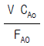
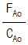
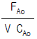
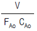
(정답률: 알수없음)
67. 다음 중 회분식 반응기의 특징이 아닌 것은?
- 반응기 내의 모든 곳의 순간 조성이 일정하다.
- 대개 소량 다품종 생산에 적합하다.
- 반응속도가 큰 경우에 많이 이용된다.
- 시간에 따라 조성이 변화하는 비정상 상태로서 시간이 독립변수가 된다.
(정답률: 알수없음)
68. 화학 반응에 정촉매를 사용하면 증가하는 것은?
- 평형농도
- 평형전화율
- 반응속도
- 반응온도
(정답률: 알수없음)
69. 온도에 따른 속도의 변화가 아래 표와 같을 때 활성화 에너지(kJ)는?
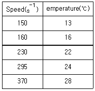
- 약15
- 약30
- 약45
- 약60
(정답률: 알수없음)
70. 어떤 병렬반응
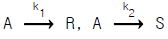
에서 A → R 반응이 원하는 반응이라면, E1 > E2 인 경우에 다음 중 어떤 것이 좋겠는가? (단, E 는 활성화에너지)- 온도가 높을수록 좋다.
- 온도가 낮을수록 좋다.
- 온도에는 별 영향이 없다.
- 경우에 따라 다르다.
(정답률: 알수없음)
71. 어떤 성분 A가 분해되는 단일성분의 비가역 반응에서 A의 초기농도가 340mol/L인 경우 반감기가 100sec이었다. 만일 A의 기체의 초기농도를 288mol/L로 할 경우는 140sec가 되었다. 이 반응의 반응차수는 얼마인가?
- 0차
- 1차
- 2차
- 3차
(정답률: 알수없음)
72. 다음 설명 중 옳지 않은 것은?
- 밀도가 일정한 반응계에서는 공간시간과 평균잔류 시간은 항상 같다.
- 부피가 팽창하는 기체 반응의 경우 평균잔류 시간은 공간 시간보다 적다.
- 반응물의 부피가 반응율과 직선 관계로 변하는 관형 반응기에서 평균잔류 시간은 반응속도와 무관하다.
- 공간시간과 공간 속도의 곱은 항상 1 이다.
(정답률: 알수없음)
73. 혼합 반응기에서 반응 속도식이
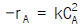
인 반응의 50% 전화율을 얻었다. 반응기의 부피를 5배로 하면 전화율은 어떻게 되겠는가?- 0.7
- 0.73
- 0.8
- 0.83
(정답률: 알수없음)
74. 회분식반응기에서 n차 반응이 일어날 때의 설명으로 옳은 것은?
- n > 1이면 반응이 끝나는 시간이 유한하다.
- 0(zero)차 반응의 반응속도는 농도의 함수이다.
- n < 1이면 t = CA01-n/(1 - n)k일 때 CA = 0이다.
- 양대수방안지(log-log paper)에 n차반응의 반감기를 초기농도의 함수로 표시하면 기울기가 (n - 1)이다.
(정답률: 알수없음)
75. 평균체류시간에 대한 설명으로 옳지 않은 것은?
- 정밀도계에 대한 평균체류시간은 공간시간 τ와 같다.
- 평균체류시간에 대한 분산은
 이다.
이다. - 평균체류시간 tm을 구하기 위해서는 수치적분을 이용하여야 한다.
- E(t)dt는 t와 t-dt 간의 시간 동안 반응기에 체류한 물질의 분율이다.
(정답률: 알수없음)
76. 두번째 반응기의 크기가 첫번째 반응기 체적의 2배인 2개의 혼합 반응기를 직렬로 연결하여 물질 A의 액상분해 속도론을 연구한다. 정상상태에서 원료의 농도가 1mol/L 이고, 첫번째 반응기에서 평균체류 시간은 96초 이며 첫번째 반응기의 출구 농도는 0.5mol/L이고 두번째 반응기의 출구 농도는 0.25mol/L이다. 이 분해반응은 몇 차 반응인가?
- 0차
- 1차
- 2차
- 3차
(정답률: 알수없음)
77. 반응물 A가 두가지의 동시반응에 의하여 분해되어 두가지의 생성물을 만든다. A→ D(원하는반응)rD={0.002 exp[2500(1/300-1/T)]}CAA → U rU={0.004 exp[2300(1/300-1/T)]}C2A비목적 생성물(U)의 생성을 최소화 하기 위한 조건 중 옳지 않은 것은?
- 선택성이 우수한 촉매사용
- 고온
- 낮은 CA의 농도
- CSTR 반응기 사용
(정답률: 알수없음)
78. 기초반응 A →1/2 R 의 옳은 반응속도식은?
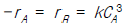
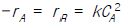
- -rA = 2rR = kCA
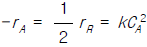
(정답률: 알수없음)
79. 반응물 A가 다음의 평행 반응으로 반응한다.
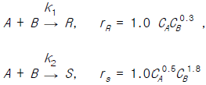
이 때, R은 목적하는 생성물, S는 목적하지 않는 생성물이다. CA = 0.3 mol/l, CB = 0.2 mol/l 일 때의 순간적인 수득분율은 얼마인가?- 0.660
- 0.760
- 0.860
- 0.960
(정답률: 알수없음)
80. 이상기체인 A 와 B 가 일정한 부피 및 온도의 반응기에서 반응이 일어날 때 반응물 A의 분압이 PA라고 하면 반응 속도식이 옳은 것은?
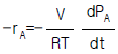
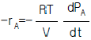
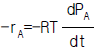
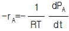
(정답률: 알수없음)
5과목: 공정제어
81. 주파수 전달 함수 G(jω )의 변화를 logω (혹은 ω )에 대하여 그 크기를 ㏈로 표시하고 위상각을 도[° ]로 나타내는 방법을 무엇이라고 하는가?
- 극좌표
- 나이퀴스트 선도
- 니콜스 선도
- 보오드 선도
(정답률: 알수없음)
82. 전달함수가
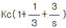
인 제어계에 있어서 미분시간과 적분시간은 각 각 얼마인가?- 3, 3
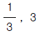
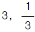
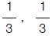
(정답률: 알수없음)
83. 제어계(control system)의 구성요소가 아닌 것은?
- 전송부
- 기획부
- 검출부
- 조절부
(정답률: 알수없음)
84. 전달함수
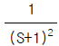
인 2차계의 주파수 응답에서 구석점 주파수(corner frequency)에서의 진폭비는?- 1/2
- √2/2
- √3/2
- 1
(정답률: 알수없음)
85. 1차계인 수은 온도계의 시간 상수가 0.4분이면 온도의 변화를 측정할 때 95%의 정확성을 가지는 측정 시간은 몇 분인가?
- 0.80
- 1.2
- 1.6
- 2.0
(정답률: 알수없음)
86.
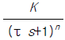
의 고차계 공정에서의 단위계단 입력에 대한 공정응답 중 맞는 것은?- 차수 n 이 커지면 진동응답이 생길 수 있다.
- 차수 n 이 커질수록 응답이 느려진다.
- 시상수 τ 가 클수록 응답이 빨라진다.
- 이득 K 가 커지면 진동응답이 생길 수 있다.
(정답률: 알수없음)
87. 이차계의 특성을 나타내는 공정을 제어하기 위하여 비례-적분-미분 제어기를 사용하여 되먹임제어 시스템을 구성하였다. 이 때 제어기의 미분 동작이 하는 역할로써 잘못 기술 된 것은?
- 설정점의 변화시, 미분동작은 설정점 변화에 비례하여 상반된 방향으로 작용하여 진동을 완화시킨다.
- 설정점 변화에 따른 잔류편차를 줄여 주지는 못한다.
- 제어 시스템의 감쇠인자가 커짐으로써 진동성을 억제한다.
- 제어시스템의 시간상수가 작아짐으로써 응답을 빠르게 한다.
(정답률: 알수없음)
88. 그림과 같은 응답 곡선은 2차계 시스템에서 ζ 가 어떤 값을 가질 때 나타나는가?
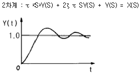
- ζ > 1
- ζ = 1
- ζ < 1
- ζ ≥ 0
(정답률: 알수없음)
89. 다음은 시상수에 관한 관계식이다. 옳은 것은?
- 시상수 = 추진력 × 용량
- 시상수 = 커패시턴스/저항
- 시상수 = 저항× 커패시턴스
- 시상수 = 용량/ 추진력
(정답률: 알수없음)
90. 다음과 같은 블럭선도에서 추진제어에 관한 전달함수는? (단, G = GCG1G2H)
(정답률: 알수없음)
91. 2차 underdamped system에서 response가 최초로 그 최종값(ultimate value)에 도달하는 시간을 무엇이라 부르는 가?
- response times
- rise times
- peak times
- dead times
(정답률: 알수없음)
92. PI 제어기가 반응기 온도제어루프에 사용되고 있다. 다음의 변화에 대하여 계의 안정성 한계에 영향을 주지 않는 것은?
- 온도전송기의 span 변화
- 온도전송기의 영점 변화
- 밸브의 trim 변화
- 반응기 원료 조성 변화
(정답률: 알수없음)
93. amped vibrator의 전달함수는?
- 1차 전달함수
- 2차 전달함수
- 3차 전달함수
- 0차 전달함수
(정답률: 알수없음)
94. 전달함수 특성방정식의 근과 공정응답과의 관계 중 맞는 것은?
- 근이 실수이면 진동 응답을 보인다.
- 근의 허수부분 절대값이 클수록 진동주기가 커진다.
- 근이 실수 축에 가까워 질수록 응답 속도가 느려진다
- 근 중 하나라도 실수부분이 음의 값을 가지면 응답은 발산한다.
(정답률: 알수없음)
95. f(t)를 라플라스 변환한 결과, 다음과 같은 식을 얻었다. 이로부터 f(t)를 구한 것으로 올바른 것은?
- tet+e-t-1
- tet-e-t-1
- te-t-et-1
- -te-t-et
(정답률: 알수없음)
96. coshω t의 Laplace 변환은?
(정답률: 알수없음)
97. 그림은 무엇을 나타내는가? (단, ℓ 은 이동거리(m), V는 이동속도(m/sec)이다.)
- CR회로의 동작응답
- 용수철의 응답
- 데드타임(dead time)의 공정응답
- 적분제어계의 응답
(정답률: 알수없음)
98. 다음 열전대 중 동일직경의 열전대가 가장 높은 온도에서 사용될 수 있는 열전대는?
- PR
- CA
- IC
- CC
(정답률: 알수없음)
99. 함수 f(t)의 Laplace 변환이 다음 식과 같을 때 함수 f(t)의 최종 값을 구하면?
- 1
- 2
- 3
- 4
(정답률: 알수없음)
100. 의 Laplace 역변환은?
- et - e3t
- e-t - e-3t
- e3t - et
- e-3t - e-t
(정답률: 알수없음)
6과목: 화학공업개론
101. 다음 중 P형 반도체를 제조하기 위해 실리콘에 소량 첨가하는 물질은?
- 비소
- 안티몬
- 인디윰
- 비스무스
(정답률: 알수없음)
102. 이온전도성 산화물을 전해질로 이용하여 고온으로 운전하는 연료전지(fuel cell)는?
- Phosphoric acid fuel cell
- Solid oxide fuel cell
- Molten carbonate fuel cell
- Solid polymer fuel cell
(정답률: 알수없음)
103. 다음 중 석유의 전화(conversion)법이 아닌 것은?
- 분해(cracking)
- 알킬화(alkylation)
- 정제(refining)
- 개질(reforming)
(정답률: 알수없음)
104. 벤젠의 할로겐화 반응에서 반응력이 가장 적은 것은?
- Cl2
- I2
- Br2
- F2
(정답률: 알수없음)
1⑤. 황산의 원료인 아황산가스는 황화철광(pyrite)을 공기로 완전연소하여 얻는다. 4 FeS2 + 11 O2 → 8 SO2 + 2 Fe2O3 황화철광의 10%는 불순물이라 할 때 황화철광 1톤을 완전 연소하는데 필요한 이론 공기량은 0℃, 1기압에서 약 몇m3인가? (단, FeS2 분자량=120, 공기중의 산소 몰분율=0.21)
- 460
- 580
- 2200
- 2480
(정답률: 알수없음)
106. 아세틸렌에 무엇을 작용시키면 염화비닐이 생성되는가?
- HCl
- Cl2
- HOCl
- KCl
(정답률: 알수없음)
107. 다음 반응의 생성물은?
- cyclohexylamine
- adipic acid
- nitro benzene
- hexamethylendiamine
(정답률: 알수없음)
108. 다음 중 유기전해액 전해질을 이용하는 전지는?
- 니켈-금속수소전지
- 공기-아연전지
- 알칼리전지
- 리튬전지
(정답률: 알수없음)
109. 반도체 공정 중 감광되지 않은 부분을 제거하는 공정은?
- 리소그래피
- 에칭
- 세정
- 산화공정
(정답률: 알수없음)
110. 암모니아 산화법에 의하여 질산을 제조하면 상압에서 순도가 약 65%내외가 되어 공업적으로 사용하기 힘들다. 이럴 경우 순도를 높이기 위해 일반적으로 어떻게 하는가?
- H2SO4의 흡수제를 첨가하여 3성분계를 만들어 농축 한다.
- 온도를 높여 끓여서 물을 날려보낸다.
- 촉매를 첨가하여 부가반응을 시킨다.
- 계면활성제를 사용하여 물을 제거한다.
(정답률: 알수없음)
111. 다음 중 Markownikoff 법칙에 따라 반응이 일어나지 않는 것은?
- CH3CH=CH2 + H2SO4
- C(CH3)2=CH2 + HOCl
- CH3CH2CH=CH2 + HBr
- H2O2 CH3CH=CH2 + HBr

(정답률: 알수없음)
112. 황산암모늄은 황산 용액의 포화조에 암모니아 가스를 주입하여 제조한다. 황산 85% 1000kg을 포화조에서 암모니아 가스로 반응시키면 몇 kg의 황산암모늄 결정이 석출하겠는가? (단, 100℃에서 황산암모늄의 용해도는 97.5g/100g.H2O 이며, 수분의 증발 및 분리공정 손실은 없는 것으로 가정한다.)
- 788.7
- 895.7
- 998.7
- 1095.7
(정답률: 알수없음)
113. 나프타의 열분해 반응은 감압하에 하는 것이 유리하나 실제에는 수증기를 도입하여 탄화수소의 분압을 내리고 평형을 유지하게 한다. 이러한 조건으로 하는 이유가 아닌것은?
- 진공가스 펌프의 에너지 효율이 높다.
- 중합등의 부반응을 억제한다.
- 수성가스 반응에 의해 탄소석출이 방지된다.
- 농축에 의해 생성물과의 분류가 용이하다.
(정답률: 알수없음)
114. 다음 중 암모니아 함수의 탄산화 공정에서 주로 생성되는 물질은?
- NaCl
- NaHCO3
- Na2CO3
- NH4HCO3
(정답률: 알수없음)
115. 감광제의 세가지 기본요소가 아닌 것은?
- 고분자
- 용매
- 광감응제
- 현상액
(정답률: 알수없음)
116. 방향족 니트로화합물을 아민으로 환원하는데 있어서 환원제의 종류에 따라 생성물이 변화한다. 다음 중 반응물, 환원제, 생성물이 잘못 연결된 것은?
- 니트로벤젠, Fe + HCl, 아닐린
- 니트로벤젠, Zn + H2SO4, 아닐린
- 니트로벤젠, Cu + H2, 아닐린
- 디니트로벤젠, H2S + NH3, 아닐린
(정답률: 알수없음)
117. 융점이 327℃이며, 이 온도이하에서는 어떠한 용매에도 녹지않는 내약품성을 지니고 있어 화학공정기계의 부식방지용 내식재료로 많이 응용되고 있는 고분자 재료는 무엇인가?
- 폴리에틸렌
- 폴리테트라 플로로에틸렌
- 폴리카보네이트
- 폴리이미드
(정답률: 알수없음)
118. 다음의 질소비료 중 질소함유량이 가장 낮은 비료는?
- 황산암모늄(황안)
- 염화암모늄(염안)
- 질산암모늄(질안)
- 요소
(정답률: 알수없음)
119. 염화암모늄(염안)은 암모니아소다법에서 중탄산소다를 분리하고난 모액으로부터 부생된다. 이 때 사용되는 원료가 아닌 것은?
- NaCl
- CO2
- H2O
- NH4Cl
(정답률: 알수없음)
120. 공업적 황산제조와 관계가 먼 것은?
- 산화질소촉매사용
- V2O5 촉매 사용
- SO3 가스를 황산에 흡수시킴
- SO3 가스를 물에 흡수시킴
(정답률: 알수없음)